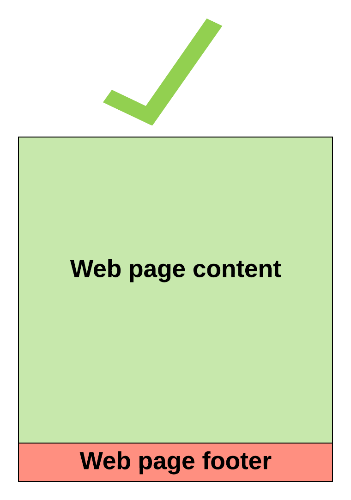
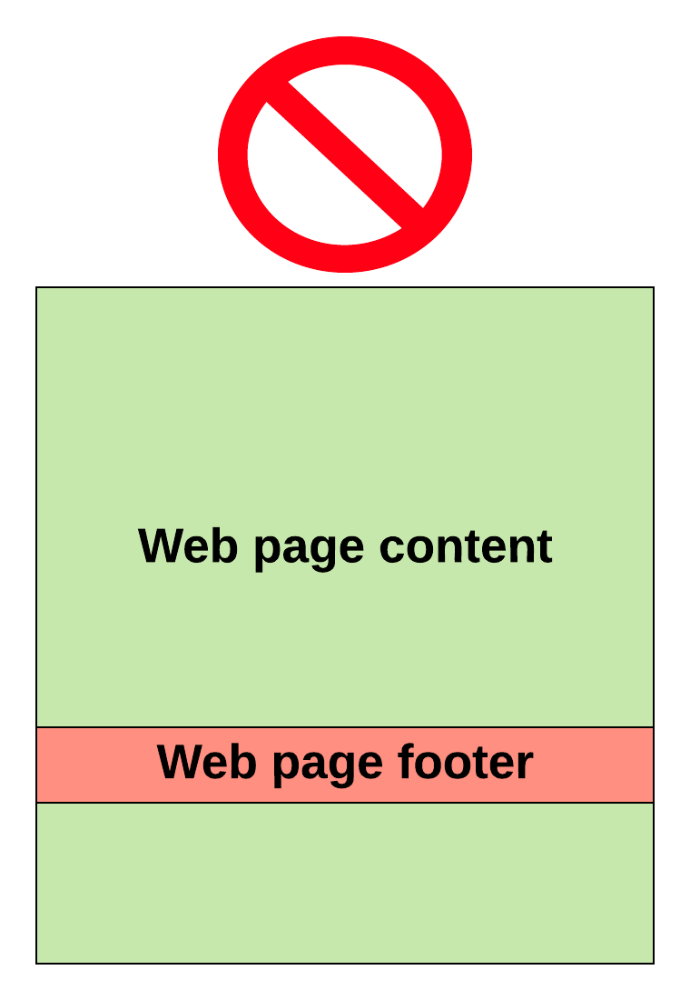

Keep Footer at Bottom of Webpage
The footer defines the end of a web page (or section), and typically contains copyright
information,
contact details, navigation links, etc.
Proper Footer Placement

Incorrect Footer Placement

How to ensure proper footer placement
Step 1: Use this as your template.html
<!DOCTYPE html>
<html>
<head>
<link rel="stylesheet" type="text/css" href="main.css" />
</head>
<body>
<div id="page-container">
<div id="content-wrap">
<!-- all other page content -->
</div>
<footer id="footer"></footer>
</div>
</body>
</html>
Step 2: Use this as your template.css
#page-container {
position: relative;
min-height: 100vh;
}
#content-wrap {
padding-bottom: 2.5rem; /* Footer height */
}
#footer {
position: absolute;
bottom: 0;
width: 100%;
height: 2.5rem; /* Footer height */
}
Step 3: Add your content, and you're done.